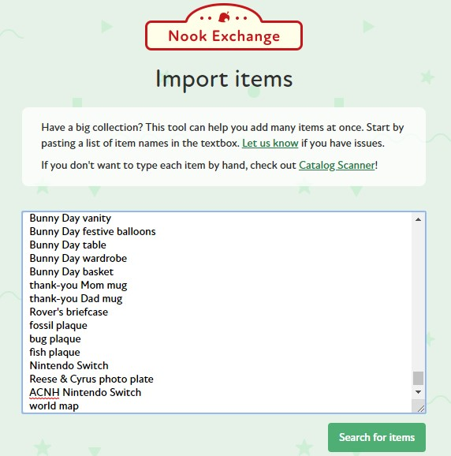
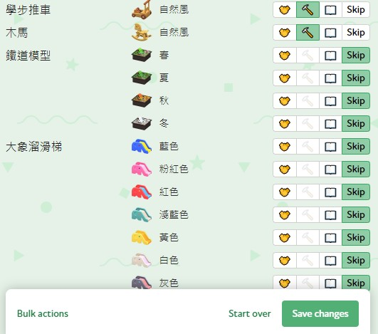

免責聲明：Nook Exchange 為粉絲自行製作的 《集合吧！動物森友會》 物品目錄網站，本頁面僅做為推廣使用，本人並未與 Nook Exchange 製作者或任天堂有任何關聯。所有與 《集合吧！動物森友會》 遊戲相關內容、圖像等版權皆屬任天堂公司所有。
使用方法
1. 進入 Nook Exchange 網站，點擊右上角 Register 按鈕並依指示註冊帳號（為了您的資訊安全，請避免與其他網站共用密碼）
若已註冊，請在註冊頁面點擊下方 Login instead? 按鈕登入。

2. 登入後（應該可於右上角看到自己的ID），進入 https://nook.exchange/import 頁面，將下方連結內文字內容貼入文字框內後，點擊 Search for items 按鈕即可搜尋所有物件！
由於目前搜尋時只能使用英文，所以下方提供完整英文物件清單：

3. 按下後可以看到如上圖介面，點擊「📖」表示加至目錄，「🔨」表示可製作DIY，「🤝」表示提供交換
4. 點完之後按下最下面 Save changes 就好囉(`・ω・´)！